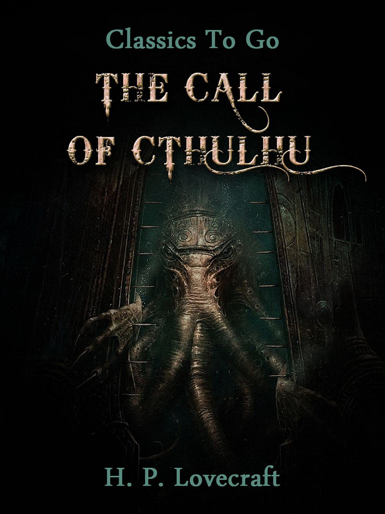

1. Sự im lặng của bầy cừu - Thomas Harris

Nguồn ảnh: inspiredpencil
- Tác giả: Thomas Harris
- Thể loại: Tiểu thuyết kinh dị, trinh thám tâm lý
- Cảm nhận: Đây là một cuốn sách kinh điển trong thể loại trinh
thám tâm lý, kể về cuộc truy đuổi tội phạm của FBI với sự giúp đỡ của
một tên sát nhân thông minh. Câu chuyện hấp dẫn, kịch tính và đầy bất
ngờ, khiến người đọc không thể rời mắt khỏi trang sách.
2. Trại súc vật - George Orwell

Nguồn ảnh: Amazon
- Tác giả: George Orwell
- Thể loại: Tiểu thuyết chính trị, châm biếm
- Cảm nhận: Cuốn sách là một phép ẩn dụ sắc bén về cuộc cách
mạng của những tầng lớp thấp kém trong xã hội, sau đó bị tha hóa bởi
quyền lực. Qua câu chuyện về những con vật nổi dậy chống lại con
người, Orwell đã khắc họa một cách sâu sắc về bản chất của quyền lực
và sự phản bội lý tưởng.
3. The IT - Stephen King
Nguồn ảnh: Amazon
- Tác giả: Stephen King
- Thể loại: Tiểu thuyết kinh dị, tâm lý
- Cảm nhận: Đây là một tác phẩm kinh điển của Stephen King, kể
về một sinh vật siêu nhiên tên là It, có khả năng biến đổi hình dạng
và sống trong các hố rác dưới lòng đất. Cuốn sách mang đến cảm giác
kinh dị mãnh liệt và đầy bất ngờ, đặc biệt khi các nhân vật lớn lên và
trở lại để đối mặt với It.
4. The call of Cthulhu - H.P. Lovecraft
Nguồn ảnh: goodreads
- Tác giả: H.P. Lovecraft
- Thể loại: Tiểu thuyết kinh dị, khoa học viễn tưởng
- Cảm nhận: Đây là một tác phẩm kinh điển của H.P. Lovecraft,
là tác phẩm khai sinh cho thể loại kinh dị siêu nhiên (Cosmic Horror).
Tác phẩm mang lại cảm giác nhỏ bé của con người trước cái vô hạn của
vũ trụ, đặt câu hỏi lớn cho giá trị hiện sinh của nhân loại.